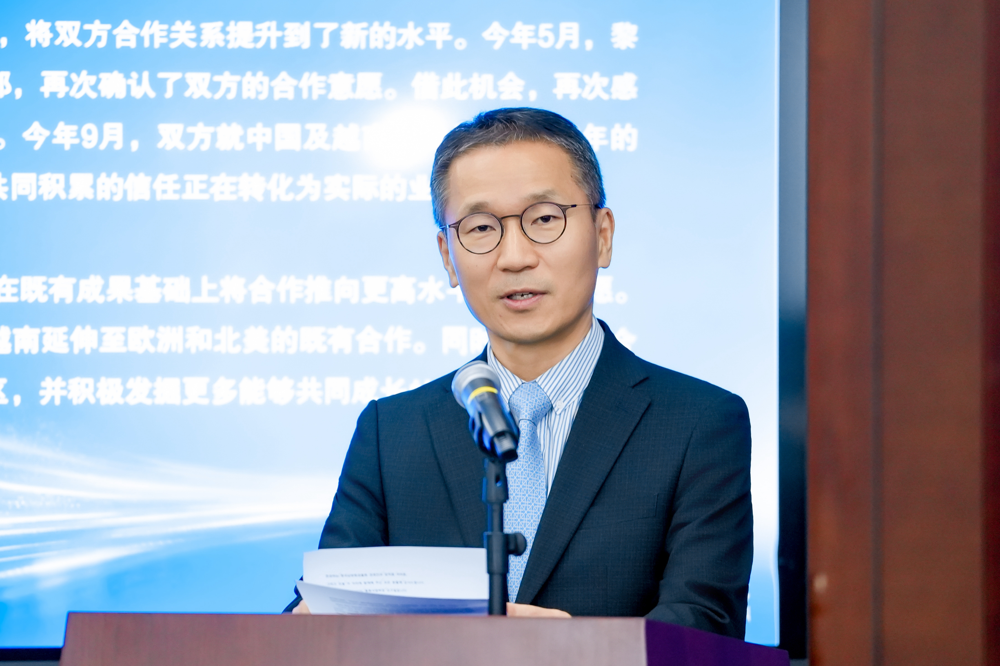
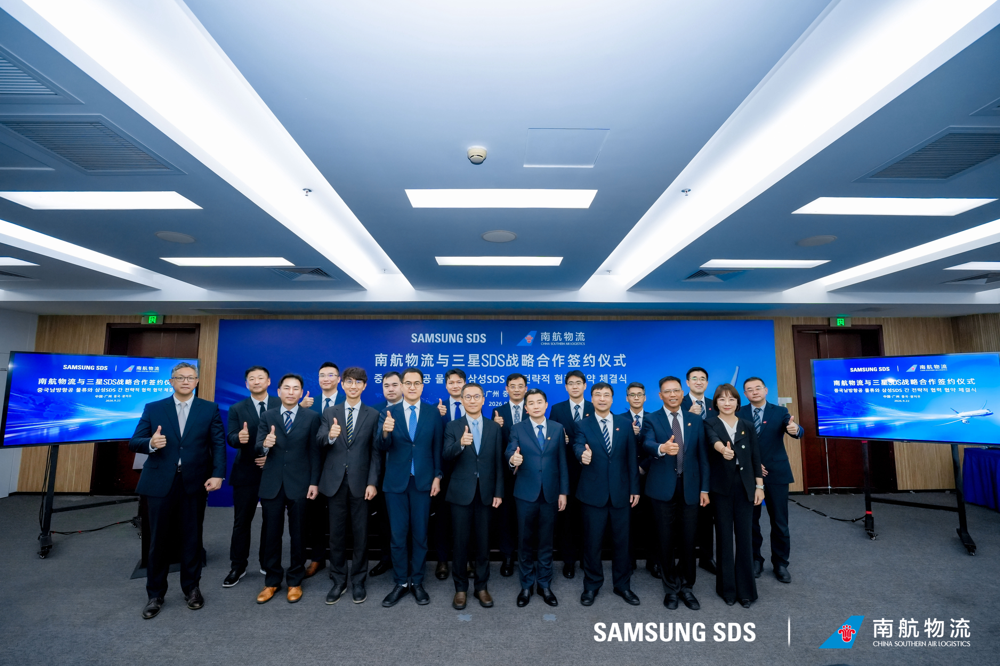
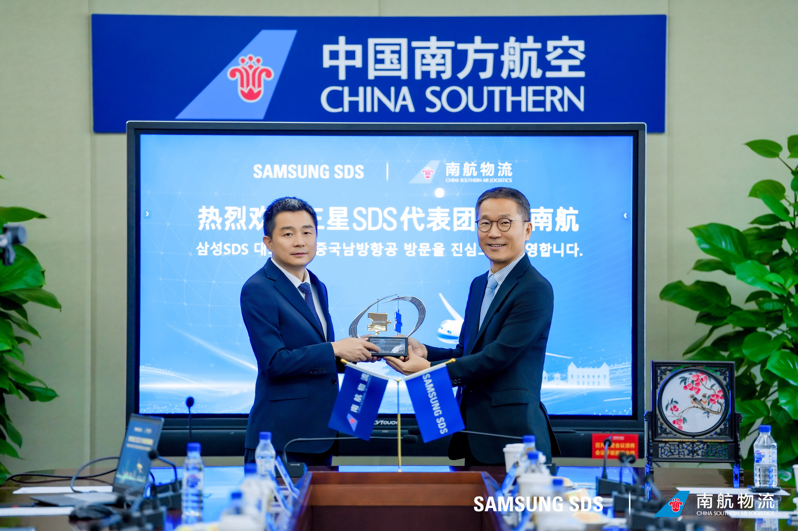
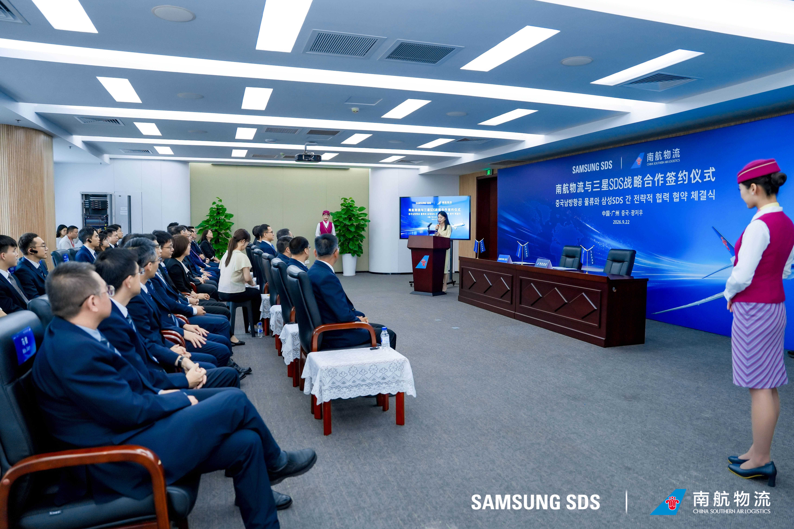
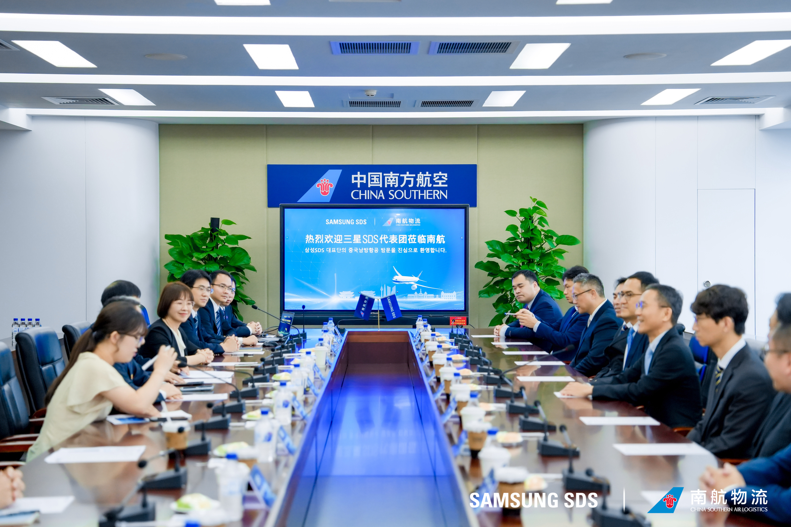

On September 22, 2026, Samsung SDS and China Southern Air Logistics signed a strategic cooperation memorandum of understanding (MOU) in Guangzhou, China, officially establishing a strategic partnership.

Kooil O, Executive Vice President of Samsung SDS, and Xiao Li, Chairman of China Southern Air Logistics, signed the strategic cooperation MOU on behalf of their respective parties. According to the MOU, this cooperation combines Samsung SDS’s strengths in smart supply chain management with China Southern Air Logistics’ air logistics network, which covers more than 170 countries and regions. Both parties will engage in-depth cooperation in fields such as international air logistics and integrated supply chain solutions, helping to enhance the resilience and collaborative efficiency of the global high-end manufacturing supply chain.

Several other Samsung SDS representatives also attended the signing ceremony, including KwangBin Roh, Vice President, China; Eddie Choi, Vice President of Air Pricing; Bohkyu Choi, Vice President, China; Sunn Kim, Air Product Director; and Gary Tsang, Sourcing General Manager, China.

Samsung SDS stated, “We will further strengthen our existing cooperation on routes connecting China and Vietnam with Europe and North America. We also look forward to expanding cooperation into new regions, including the Middle East and Southeast Asia. By combining the global supply chain management experience and customer base of Samsung SDS with the strong air cargo network and hub capabilities of China Southern Air Logistics, we will shape the future of the global air logistics market.”
China Southern Air Logistics stated, “Previously, we have jointly established an efficient logistics corridor of the 'Vietnam Factory - China Hub - Global Distribution'. In the future, both parties will integrate their respective strengths to further explore cooperation opportunities in more markets. We will work together to build an efficient and resilient global high-end manufacturing supply chain, provide more competitive air logistics solutions for global customers, and make greater contributions to China-ROK economic and trade cooperation as well as regional development and prosperity.”

As a world-leading digital international logistics enterprise, Samsung SDS will deepen its cooperation with China Southern Air Logistics. With its 52 branches in 36 countries, Samsung SDS will offer a range of air freight services, including airport-to-airport and door-to-door. Meanwhile, through Cello Square, its digital international logistics platform, Samsung SDS will also provide digital logistics features including quotation, booking, and tracking, enhancing logistics visibility and convenience to create greater value for customers.

As one of China’s leading air logistics service providers, China Southern Air Logistics will take the signing of this strategic cooperation MOU as an opportunity to accelerate its transformation into a modern integrated logistics service provider. Leveraging its 19 Boeing 777F large freighters and the abundant belly-hold cargo capacity of China Southern Airlines’ passenger fleet, it will continue to strengthen its full-chain customized supply chain service capabilities. Working hand in hand with partners around the world, China Southern Air Logistics will expand international cooperation based on mutual benefit, contributing to keeping the “Air Silk Road” unimpeded and supporting China’s high-level opening-up to the world.